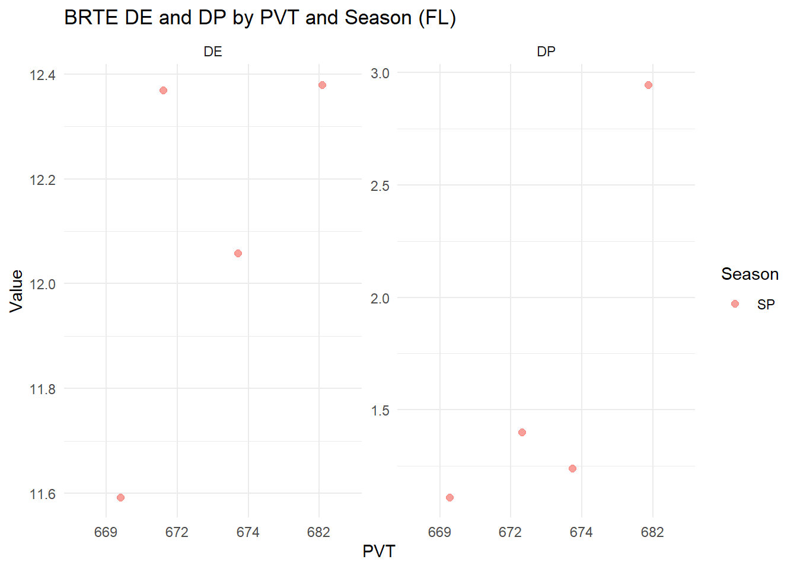
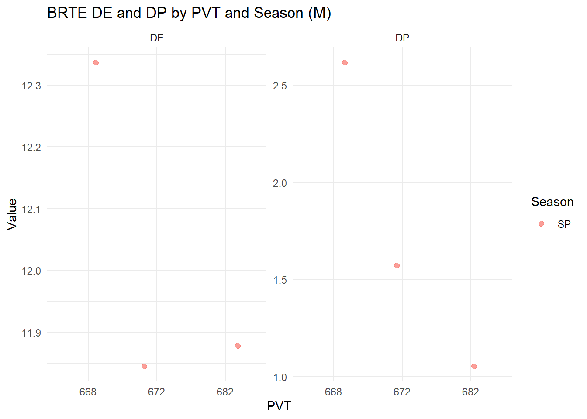
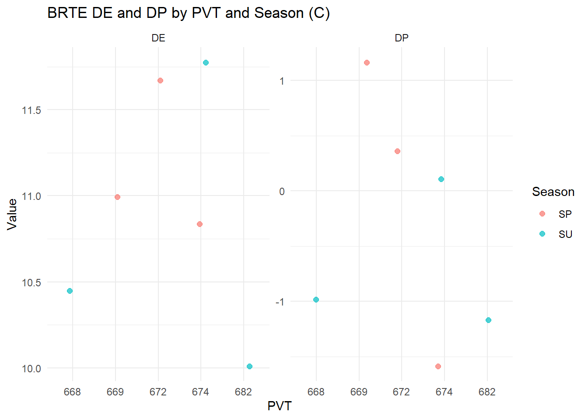
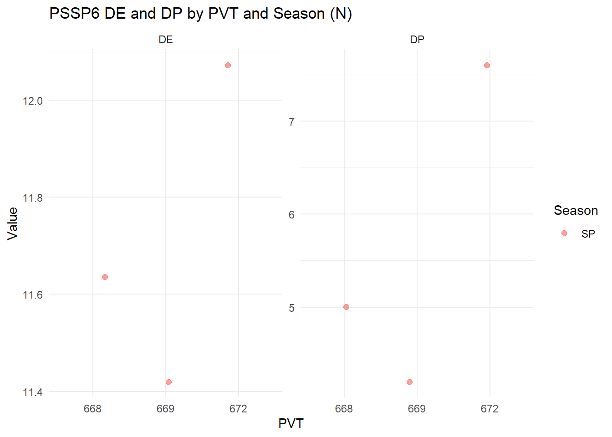
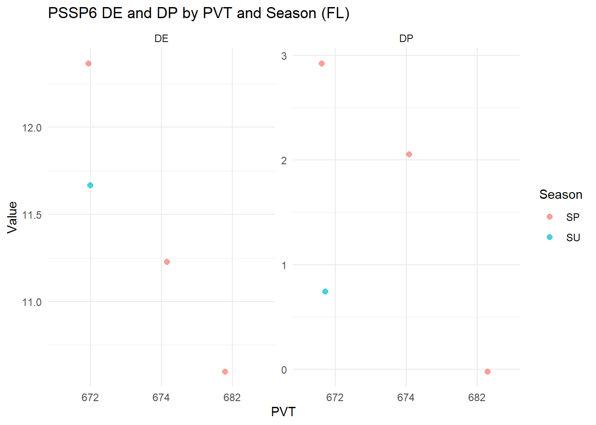
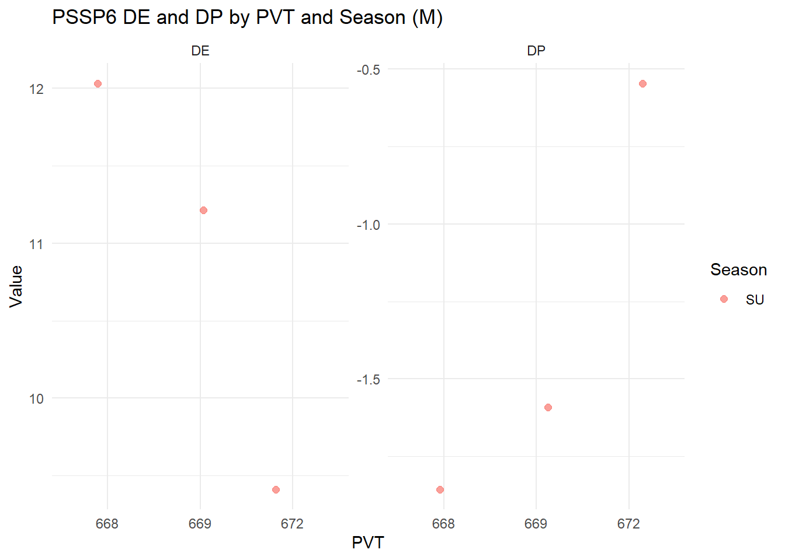
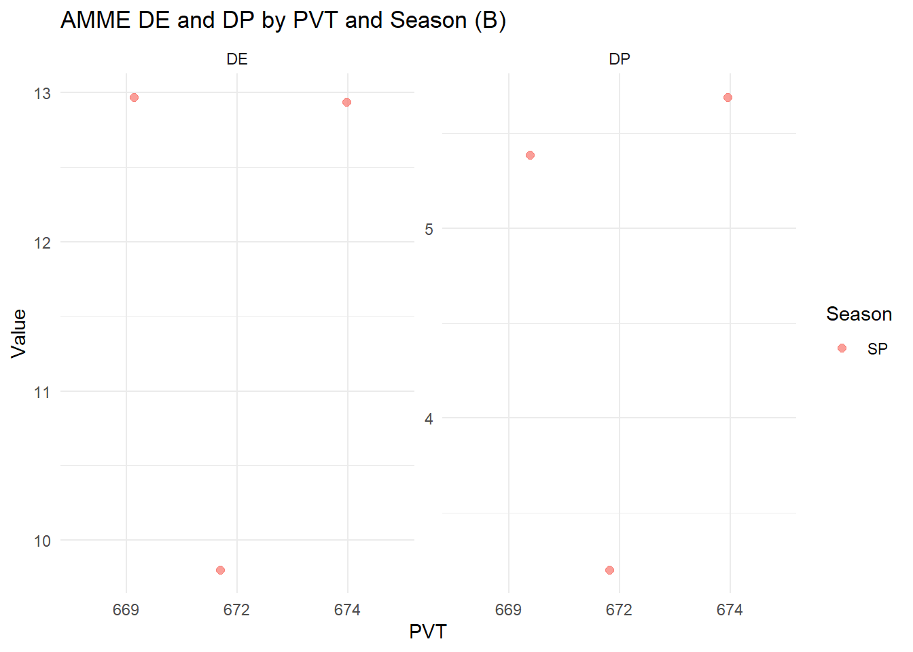

brte_fl <- d %>%filter(Spp =="BRTE", Pheno =="FL") %>%mutate(Season =factor(Season, levels =c("SP", "SU")),PVT =as.factor(PVT) )# Pivot DE and DP into long formatbrte_long <- brte_fl %>%pivot_longer(cols =c(DE, DP),names_to ="Metric",values_to ="Value" )# Plot with facetsggplot(brte_long, aes(x = PVT, y = Value, color = Season)) +geom_jitter(width =0.2, height =0, size =2, alpha =0.7) +facet_wrap(~ Metric, scales ="free_y") +# separate panels for DE and DPlabs(title ="BRTE DE and DP by PVT and Season (FL)",y ="Value", x ="PVT") +theme_minimal()

Code
brte_m <- d %>%filter(Spp =="BRTE", Pheno =="M") %>%mutate(Season =factor(Season, levels =c("SP", "SU")),PVT =as.factor(PVT) )# Pivot DE and DP into long formatbrte_m <- brte_m %>%pivot_longer(cols =c(DE, DP),names_to ="Metric",values_to ="Value" )# Plot with facetsggplot(brte_m, aes(x = PVT, y = Value, color = Season)) +geom_jitter(width =0.2, height =0, size =2, alpha =0.7) +facet_wrap(~ Metric, scales ="free_y") +# separate panels for DE and DPlabs(title ="BRTE DE and DP by PVT and Season (M)",y ="Value", x ="PVT") +theme_minimal()

Code
brte_c <- d %>%filter(Spp =="BRTE", Pheno =="C") %>%mutate(Season =factor(Season, levels =c("SP", "SU")),PVT =as.factor(PVT) )# Pivot DE and DP into long formatbrte_c <- brte_c %>%pivot_longer(cols =c(DE, DP),names_to ="Metric",values_to ="Value" )# Plot with facetsggplot(brte_c, aes(x = PVT, y = Value, color = Season)) +geom_jitter(width =0.2, height =0, size =2, alpha =0.7) +facet_wrap(~ Metric, scales ="free_y") +# separate panels for DE and DPlabs(title ="BRTE DE and DP by PVT and Season (C)",y ="Value", x ="PVT") +theme_minimal()

Code
pssp6_n <- d %>%filter(Spp =="PSSP6", Pheno =="N") %>%mutate(Season =factor(Season, levels =c("SP", "SU")),PVT =as.factor(PVT) )# Pivot DE and DP into long formatpssp6_n <- pssp6_n %>%pivot_longer(cols =c(DE, DP),names_to ="Metric",values_to ="Value" )# Plot with facetsggplot(pssp6_n, aes(x = PVT, y = Value, color = Season)) +geom_jitter(width =0.2, height =0, size =2, alpha =0.7) +facet_wrap(~ Metric, scales ="free_y") +# separate panels for DE and DPlabs(title ="PSSP6 DE and DP by PVT and Season (N)",y ="Value", x ="PVT") +theme_minimal()

Code
pssp6_fl <- d %>%filter(Spp =="PSSP6", Pheno =="FL") %>%mutate(Season =factor(Season, levels =c("SP", "SU")),PVT =as.factor(PVT) )# Pivot DE and DP into long formatpssp6_fl <- pssp6_fl %>%pivot_longer(cols =c(DE, DP),names_to ="Metric",values_to ="Value" )# Plot with facetsggplot(pssp6_fl, aes(x = PVT, y = Value, color = Season)) +geom_jitter(width =0.2, height =0, size =2, alpha =0.7) +facet_wrap(~ Metric, scales ="free_y") +# separate panels for DE and DPlabs(title ="PSSP6 DE and DP by PVT and Season (FL)",y ="Value", x ="PVT") +theme_minimal()

Code
pssp6_m <- d %>%filter(Spp =="PSSP6", Pheno =="M") %>%mutate(Season =factor(Season, levels =c("SP", "SU")),PVT =as.factor(PVT) )# Pivot DE and DP into long formatpssp6_m <- pssp6_m %>%pivot_longer(cols =c(DE, DP),names_to ="Metric",values_to ="Value" )# Plot with facetsggplot(pssp6_m, aes(x = PVT, y = Value, color = Season)) +geom_jitter(width =0.2, height =0, size =2, alpha =0.7) +facet_wrap(~ Metric, scales ="free_y") +# separate panels for DE and DPlabs(title ="PSSP6 DE and DP by PVT and Season (M)",y ="Value", x ="PVT") +theme_minimal()

Code
amme_b <- d %>%filter(Spp =="AMME", Pheno =="B") %>%mutate(Season =factor(Season, levels =c("SP", "SU")),PVT =as.factor(PVT) )# Pivot DE and DP into long formatamme_b <- amme_b %>%pivot_longer(cols =c(DE, DP),names_to ="Metric",values_to ="Value" )# Plot with facetsggplot(amme_b, aes(x = PVT, y = Value, color = Season)) +geom_jitter(width =0.2, height =0, size =2, alpha =0.7) +facet_wrap(~ Metric, scales ="free_y") +# separate panels for DE and DPlabs(title ="AMME DE and DP by PVT and Season (B)",y ="Value", x ="PVT") +theme_minimal()

Code
acth7_fl<- d %>%filter(Spp =="ACTH7", Pheno =="FL") %>%mutate(Season =factor(Season, levels =c("SP", "SU")),PVT =as.factor(PVT) )# Pivot DE and DP into long formatacth7_fl <- acth7_fl %>%pivot_longer(cols =c(DE, DP),names_to ="Metric",values_to ="Value" )# Plot with facetsggplot(acth7_fl, aes(x = PVT, y = Value, color = Season)) +geom_jitter(width =0.2, height =0, size =2, alpha =0.7) +facet_wrap(~ Metric, scales ="free_y") +# separate panels for DE and DPlabs(title ="ACTH7 DE and DP by PVT and Season (FL)",y ="Value", x ="PVT") +theme_minimal()